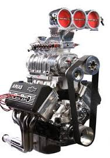

Parte encargada de energía eléctrica o cualquier otro tipo en energía mecánica útil para realizar un trabajo. Es gracias a este que se consigue la fuerza que producirá el movimiento. Puede ser térmico, donde el combustible reacciona con un comburente; o puede ser eléctrico, donde la energía eléctrica es transformada a través de interacciones electromagnéticas en energía mecánica.
Actualmente las cajas de velocidades de toma variable apenas se usan, pues han sido desplazadas por las de toma constante, que presentan los engranajes tallados con dientes helicoidales, permitiendo que los piñones del eje primario o intermediario y secundario estén siempre en contacto.Las de toma variable, al ser los dientes rectos, tienen más desgaste y producen más ruido.La palanca tiene tantas posiciones como velocidades, más la de punto muerto.
Transmite el movimiento de la caja de velocidades al conjunto par cónico-diferencial. Está constituido por una pieza alargada y cilíndrica, que va unida por uno de los extremos al secundario de la caja de cambios, y por el otro al piñón del grupo cónico.
Los dos ejes del vehículo son motrices. Los dos puentes o ejes motrices llevan un diferencial cada uno. Con esta transmisión pueden, a voluntad del conductor, enviar el movimiento a los dos puentes o solamente al trasero. Este sistema se monta frecuentemente en vehículos todo terreno y en camiones de grandes tonelajes sobre todo los que se dedican a la construcción y obras públicas.
| Tabla avanzada | Cabecera MUltiples columnas | ||
|---|---|---|---|
| primera cola | segunda cola | ||
| Motores diesel | motores gasolina | Comentario | |
| vinicio | veletanga | Hola mundo | |
| Elemento de impuslo | Gasolina | combustible fosil | |
| Pie de tabla | |||